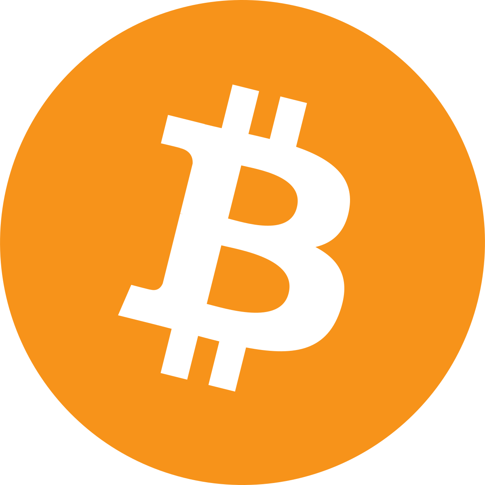
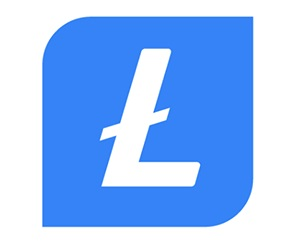
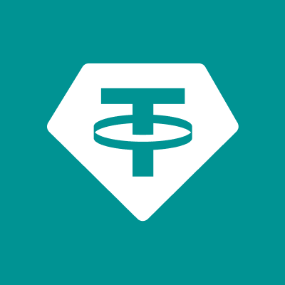

انواع ارز دیجیتال چیست؟
بیت کوین
بیت کوین یک ارز مجازی مبتنی بر شبکه بلاکچین است که بهصورت مجازی تولید و نگهداری میشود. از مشخصات کلیدی بیت کوین میتوان به موارد زیر اشاره کرد:
- بیت کوین غیرمتمرکز است. یعنی باوجوداینکه در شبکه بیت کوین تمام بلاکها باهم در ارتباط هستند و تمام معاملات برای همه کاربران نمایش داده میشود، اما تحت نظارت هیچ کمپانی بانک یا نهادی نیست. کسب درآمد از بیت کوین و انتقال ارزش در آن توسط خود اشخاص بهصورت مستقیم و بدون واسطه صورت میگیرد

لایت کوین
این ارز دیجیتال که در دسته پولهای دیجیتال قرار میگیرد، با هدف رفع برخی از نواقص بیت کوین مانند مقیاسپذیری و امکان انجام تراکنشهای بیشتر توسط چارلی لی عرضه شد و از زمان عرضه رشد خوب و با ثباتی را تجربه کرده است و جز ارزهای کم ریسک بهحساب میآید. باوجوداینکه تنها 84 میلیون لایت کوین در گردش است، میزان عرضه لایت کوین چند برابر بیت کوین است

تتر
تتر از نامآشناترین "انواع ارز دیجیتال" ثابت است که ارزش هر واحد آن معادل یک دلار آمریکا است. همه ارزهای دیجیتال ثابت در نوسانات بازار ارزش خود را حفظ میکنند. درواقع، این ارزهای دیجیتال ارزش ثابتی دارند و ارزش آنها وابسته به ارزش پشتوانه آنها است و با آن تغییر میکند
